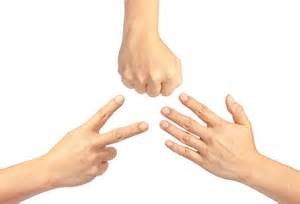

Le chifoumi (pierre-feuille-ciseaux) est un jeu qui se joue à deux et qui ne nécessite aucun matériel. Le but est de former une pierre, une feuille ou des ciseaux à l’aide de sa main en même temps
que l’adversaire.

Ainsi, ces trois signes sont de même valeur puisque chacun possède une force et une faiblesse, la pierre l’emporte sur les ciseaux, les ciseaux l’emportent sur la feuille et la feuille l’emporte sur la pierre.
Ce jeu semble donc parfaitement équilibré puisque chaque signe a 1/3 de chance de remporter le point, soit 33,33%.
En 200 avant JC, des seigneurs chinois jouaient à un jeu appelé le jeu des trois coups, qui était certainement l'ancêtre du chifoumi. Le premier usage de la pierre, de la feuille et des
ciseaux comme les trois coups était au Japon dans le XVIIème siècle et était appelé Janken ou Jan-Ken-Pon, le descendant du jeu des troips coups.
Nous pouvons supposer que le jeu est arrivé en Occident au contact du Japon puisqu'il n'y aucune trace de l'usage du pierre-feuille-ciseaux avant les contacts directs avec l'Asie. De plus,
une variante du nom de ce jeu, chifoumi, est sans doute issue du japonais Hi-fu-mi (一二三 soit 1-2-3).
Notons toutefois que le jeu de la mourre, autre jeu de doigts reposant sur l'affrontement réflexe entre deux adversaires, est très anciennement connu en Occident.
Aujourd’hui, il y a de nombreuses variantes des règles et de nom, il est amusant de voir que les symboles et leurs noms peuvent changer en fonction des différents pays et de leurs cultures.
Ainsi, en Inde par exemple les trois signes sont l'éléphant, l'être humain et la fourmi. Au Japon nous pouvons trouver parmi les variantes « guerrier, tigre, mère du guerrier ».
Nous voyons donc que le chifoumi est un jeu universel qui se joue à travers le monde entier, toutefois, il est adapté aux différentes cultures et nous pouvons assez facilement trouver d'où proviennent
les symboles (comme le cas de l'éléphant pour l'Inde).
Nous avons trouvé sur différents sites internet la stratégie suivante : les gens ont souvent tendances (intentionnellement ou non) à jouer le signe gagnant de la manche précédente, il faut donc jouer son contre. Par exemple, si lors de la première manche votre adversaire sort la feuille et vous les ciseaux, au tour suivant l'adversaire devrait, selon cette théorie, faire les ciseaux lors de la manche suivante, la logique voulant donc que l'on fasse pierre pour gagner. Les études ayant affirmées cette technique disaient qu'elle avait 66,66% de chances de gagner.
Nous avons voulu vérifier l'utilité et la véracité de cette technique. Pour cela nous avons donc fait des tests sur 100 personnes, les 50 premiers en faisant des parties normalement et les 50 autres en essayant
d'appliquer la martingale (une martingale est un un «système de jeu qui prétend, selon des principes fondés sur le calcul des probabilités, assurer un bénéfice certain dans les jeux de hasard. »).
Nous avons donc fait la première partie de l'expérience et avons recensé les résultats dans le tableau suivant :
Nous avons donc effectué les parties de pierre-feuille-ciseaux : pour les parties sans application de la martingale le joueur référent a remporté 26 parties contre 24 de ses adversaires.
Nous cherchons ensuite le pourcentage de fois où le signe gagnant a été rejoué la manche d’après. Nous obtenons un total de 502/24 pour les 50 parties, soit une moyenne de 41,8%, ce qui est loin des 66.6% estimés par la théorie mais qui laisse quand même un avantage de quelques pourcents par rapport aux 33,3% des probabilités de base de chacun des trois symboles.
L’hypothèse du signe gagnant rejoué plus souvent a été vérifiée, nous allons donc maintenant faire l’expérience en appliquant la stratégie décrite précédemment : le joueur référent joue le signe qui bat le signe qui vient de gagner. Voici le tableau des résultats:
En appliquant la martingale, le joueur référent a remporté 23 parties contre 27 pour ses adversaires.
Nous voyons que sans appliquer la martingale, le joueur référent a remporté 26 parties sur 50, et en utilisant la martingale il a gagné
23 parties sur 50. Il a donc gagné moins de parties en utilisant la martingale !
Même si l’échantillon de 50 parties n’est pas assez grand pour pouvoir conclure définitivement, nous pouvons quand même remarquer que cette
martingale ne semble absolument pas efficace.